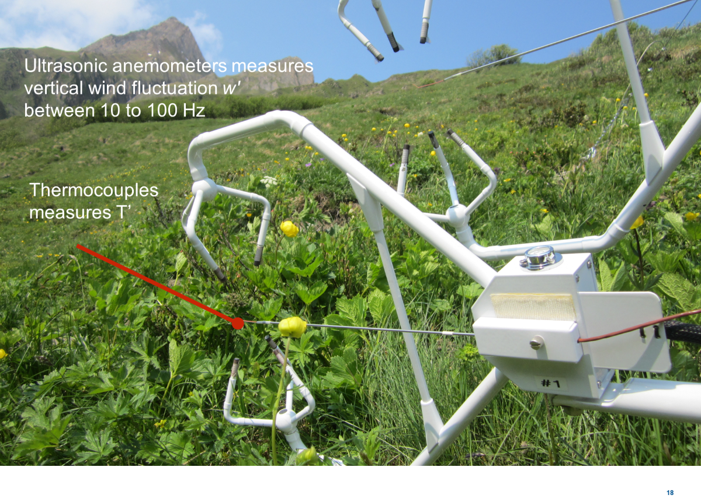

Eddy Covariance
Measuring scalar transport via turbulent exchange
Learning Objectives
- Describe the eddy covariance approach & what observations are required to measure flux densities using this approach.
- Describe the equations used to calculate H, LE and trace gas fluxes.
- Be able to interpret eddy covariance observations of Net Ecosystem Exchange (NEE).
iClicker
How do you submit the extra credit field trip assignment?
- A: Submit on Canvas as part of Assignment 4
- B: Submit on Canvas in the Final Exam
- C: Email it in anytime before the Final Exam
Convective transport
Turbulence and associated eddies transport not only momentum but also heat and mass.
- Turbulence is the most relevant vertical transport mechanism in the ABL.
Evidence of Convective Transport in a Time Series
Simultaneous measurements at 6 heights on a tower of wind vector (arrows) and temperature (colors)
Test your knowledge
What temperature profile do those observations correspond to? A (daytime) or B (nighttime)
Daytime Joint PDF \(w^{\prime} T^{\prime}\)
Fast Trace of Signals
Nighttime Joint PDF \(w^{\prime} T^{\prime}\)
Covariance and flux densities (1/2)
The vertical flux density of an entity \(c\) is defined as:
- Flux density (amount of c \(m^{-2} s^{-1}\)) = air density (\(kg\ m^{-3}\)) \(\times\) vertical velocity (\(m s^{-1}\)) \(\times\) the amount of c (units vary)
- For some entity \(c\), the general form for average flux density is:
\[ F_c = \overline{\rho w c } \qquad(1)\]
Recall: applying Reynolds decomposition to each component:
\[ \begin{align} \rho=\bar{\rho}+\rho^{\prime} \\ \nonumber w=\bar{w}+w^{\prime} \\ \nonumber c=\bar{c}+c^{\prime} \\ \nonumber \end{align} \]
Covariance and flux densities (2/2)
Close to the surface, \(\bar{w} \rightarrow 0\) and \(\rho^{\prime} \approx 0\), therefore, Equation 1 reduces to:
\[ F_c = \overline{\bar{\rho}w^{\prime}(\bar{c}+c^{\prime})} = \overline{\bar{\rho}(w^{\prime}\bar{c}+w^{\prime}c^{\prime})} \nonumber \]
Recalling that \(\overline{\bar{c}\times w^{\prime}} =0\); a flux density can be expressed in terms of the correlation coefficient:
\[ F_c = \rho \overline{w^{\prime}c^{\prime}} \qquad(2)\]
A Helpful Explanation
Measuring Sensible Heat Flux Density H by EC
The instantaneous sensible heat flux density is (in W m-2):
\[ H = C_a w^{\prime}T^{\prime} \nonumber \qquad(3)\]
Averaging and substituting \(\rho c_a\) gives:
\[ H = \rho c_a \overline{w^{\prime}T^{\prime}} \qquad(4)\]
A Typical Setup
A Typical Setup
Fast Response Temperature
Sensible heat flux vs. momentum flux
Sensible heat flux vs. momentum flux (iClicker)
Which (if either) of these joint probability distributions would you expect to have an inverted relationship at nighttime?
- A Sensible Heat Flux
- B Momentum Flux
- C Both
- D Neither
Latent heat flux density LE
The instantaneous latent heat flux density is (in W m-2):
\[ LE = L_v w^{\prime}\rho_v^{\prime} \nonumber \qquad(5)\]
Where \(\rho_v\) is the partial vapor density of water (aka absolute humidity) and \(L_v\) is the latent heat of vaporization in \(J \ kg^{-1}\) (see next slide). Averaging gives:
\[ H = L_v \overline{w^{\prime}\rho_v^{\prime}} \qquad(6)\]
Latent Heat of Vaporization
Following Yao & Rogers (1996), the latent heat of vaporization of water (\(L_v\) in \(J g^{-1}\)) can be approximated as a function of temperature (\(T\) in \(^{\circ}C\)) using a third order polynomial function:
\[ L_v = 2500.8-2.36T-0.0016T^2-0.00006T^3 \qquad(7)\]
While \(L_v\) varies as a function of \(T\); over small temperature ranges, the differences are negligible
A Typical Setup
A Typical Setup
Mass trace gas flux
If we equip an eddy covariance system with an analyzer that measures fast fluctuations of the molar density of any trace gas \(\rho_c^{\prime}\) (e.g. µmol m-3) we can directly determine the gas-exchange (molar flux) between a land surface and the atmosphere:
\[ F_c = \overline{w^{\prime}\rho_c^{\prime}} \qquad(8)\]
To convert a molar trace gas flux to a mass flux, you multiply by the molar mass M (\(\rm{g} \ \rm{mol}^{-1}\)) of the compound. For example the molar mass of \(\rm{CO}_2\) is 44.01 \(\rm{g} \ \rm{mol}^{-1}\)
A Typical Setup
Measuring the ‘breathing’ of our biosphere
Net Ecosystem Exchange
Fluxes of carbon dioxide (CO2) are of particular concern for micrometeorologists, climate scientists, and ecologists because of the role ecosystem-scale CO2 exchange plays in the global climate system.
- Measurements of Net Ecosystem Exchange (NEE) are an important component of monitoring the effects of an predicting the progression of climate change!
FLUXNET – a global network of EC sites
Source: http://fluxnet.fluxdata.org/
1. Go to: https://ameriflux.shinyapps.io/version1/
- Select site US-Ha1 & plot CO2_1_1_1 (CO2 concentration) as the Y-axis variable What do you see?
- Now change the Y-axis variable to FC_1_1_1 What do you observe?
- Click on ‘All Sites’ & change the Y-axis variable to ‘NEE’
- Create your own plot(s)
Visualizing eddy covariance data (30 min avg data)
Research example – upscaling EC to the global scale

Key Components of an EC System
1. Net all-wave radiometer
Measures total incoming and outdoing radiation (short- and long-wave)
:::
::::
2. 3-D Sonic Anemometer
3. Fine-Wire Thermocouple
Gives fast response, high-precisions temperatures observations.
4. Infrared CO2/H2O gas analyzer
The gas analyzer operates by measuring the absorption of infrared radiation at different wavelengths.
5. Soil heat flux plate
Chamber measurements of GHG fluxes
Chambers placed over the soil can measure soil GHG fluxes at even smaller scales. This requires placing the chamber on top of the soil and measuring the change in gas concentration over time
Chamber measurements of GHG fluxes
Fluxes are calculated based on the change in gas concentration over time (i.e., the slope of the line labeled data).
Take Home Points
- By simultaneously measuring vertical wind and a concentration, we can measure turbulent fluxes using the eddy-covariance technique.
- Eddy-covariance can be used to directly measure the sensible heat flux density using \(H = \rho c_a w’T’\)
- We can track the flux of water vapour and measure the latent heat flux density using \(LE = L_v w’ρv’\)
- To measure traces gas fluxes we use the covariance between the molar density and the vertical wind (w’ρc’)
- Eddy covariance observations can help inform carbon cycle & climate science